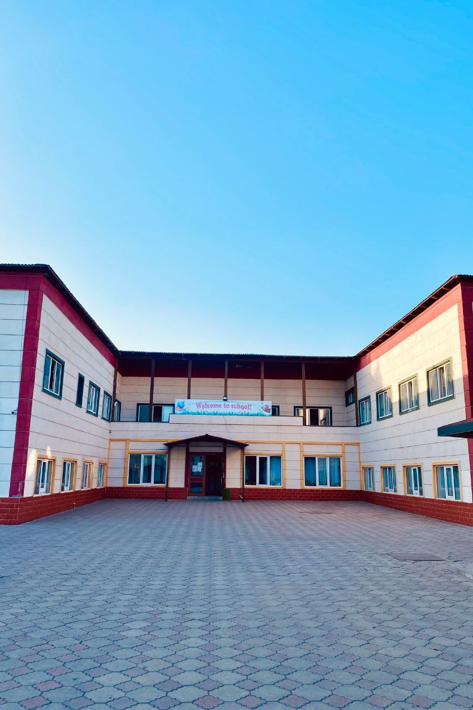

Our Campus
The territory of the lyceum is equipped with campuses for comfortable living and studying.

DORMITORY

SCHOOL

A journey of a thousand miles begins with a single step
Visit Us To Know MoreWe offer variety of courses, including ORT preparation for 10, 11 grades, TOEFL for 10 grade, and much more.
Moreover, starting from 10 grade students divide into three diffrenet profiles: med, ph/m, soc.
The profile is focused on improving the quality of education, on creating the most favorable learning conditions for students with a penchant for studying the exact sciences.
Students of this profile study in depth chemistry and biology, and in other subjects they also comprehensively explore their future profession.
The social profie at school involves an in-depth study of subjects related to man and his life. These subjects are history, languages, social studies and economy.
The territory of the lyceum is equipped with campuses for comfortable living and studying.
The Opinion Of Our Students About High School:

At school, we are completely immersed in our studies and extracurricular activities. Teachers explain the lesson very clearly, rejoice at our successes and support us in difficult situations. I am also very glad that I met my wonderful classmates.

In my opinion, the lyceum is the best place to start studying. The environment and supportive teachers have a great influence on students, creating a comfortable place for them to study and not only. Every week we organize tea parties on various topics related to the inner world of a person: "How to behave?", "How to make decisions correctly?", which makes us more independent.